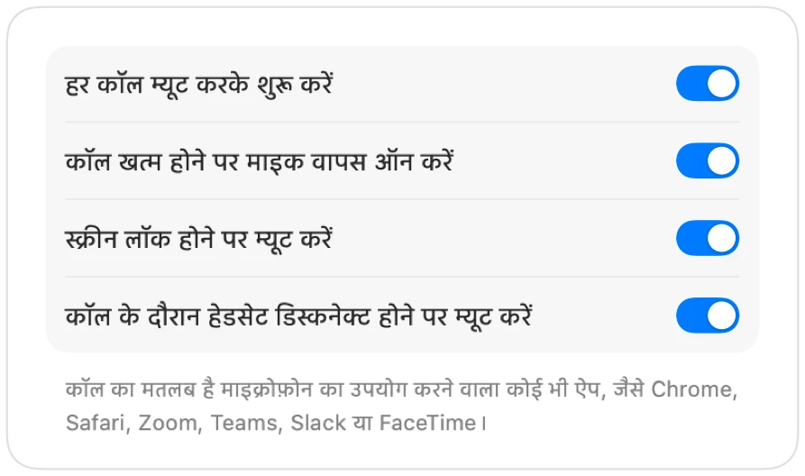

Mac पर AirPods से Microsoft Teams कैसे म्यूट करें
Teams का शॉर्टकट, Command-Shift-M, केवल तभी काम करता है जब Teams की विंडो सक्रिय हो। मीटिंग के दौरान आप आम तौर पर कहीं और होते हैं: कोई दस्तावेज़, ब्राउज़र या शेयर्ड स्क्रीन।
Muffle Teams ऐप और वेब पर Teams दोनों में कहीं से भी आपका माइक्रोफ़ोन म्यूट कर देता है। अपने AirPods दबाएं, एक शॉर्टकट दबाएं या मेनू बार पर क्लिक करें।
कहीं से भी Teams म्यूट करें
- 1
Muffle इंस्टॉल करें और माइक्रोफ़ोन तक पहुँच की अनुमति दें।
- 2
अपनी Teams मीटिंग से जुड़ें।
- 3
म्यूट करने के लिए Control-Option-M या अपने AirPods का स्टेम दबाएं। मेनू बार आइकन लाल हो जाता है।
- 4
अनम्यूट करने के लिए फिर से दबाएं, या म्यूट रहते हुए बात करने के लिए शॉर्टकट दबाए रखें।

- ब्राउज़र टैब में Teams को Muffle के ज़रिए Google Meet जैसा ही AirPods सपोर्ट मिलता है।
- “स्क्रीन लॉक होने पर म्यूट करें” चालू करें ताकि दूर जाने पर आपका माइक खुला न रहे।
अक्सर पूछे जाने वाले सवाल
क्या Teams ऐप में AirPods दबाना काम करता है?
यह आपके Teams वर्ज़न पर निर्भर करता है, क्योंकि Teams खुद भी दबाव को पहचान सकता है। Muffle का शॉर्टकट और मेनू बार बटन हर स्थिति में काम करते हैं।
क्या Teams मुझे म्यूट के रूप में दिखाएगा?
हमेशा नहीं। Muffle माइक्रोफ़ोन को म्यूट करता है, इसलिए Teams अभी भी माइक ऑन दिखा सकता है जबकि हर किसी को सन्नाटा ही सुनाई देता है।